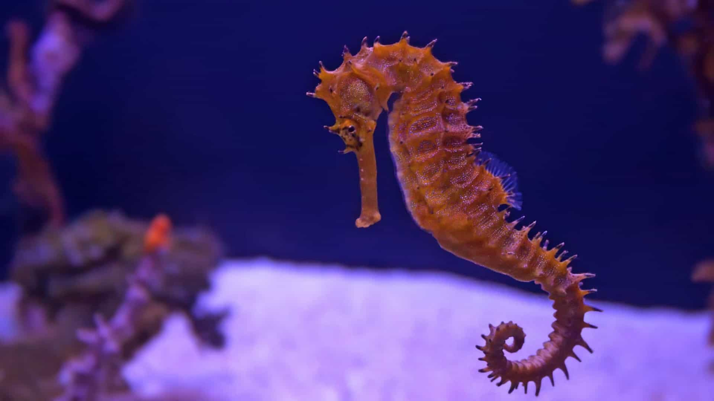
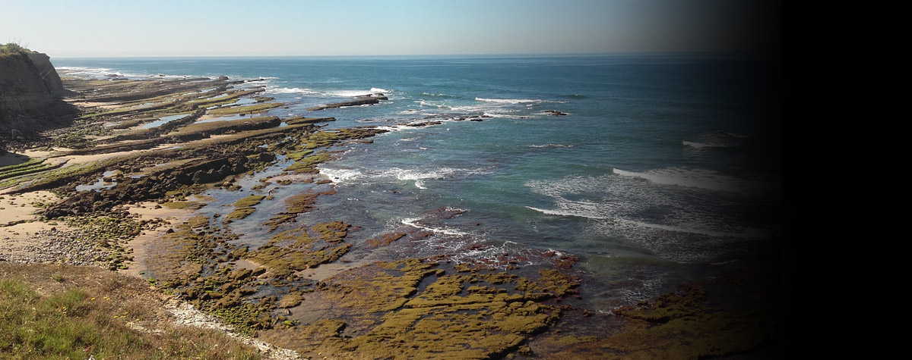
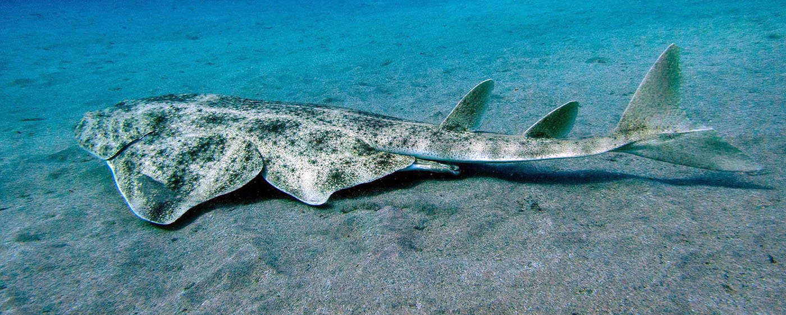

Cavalos-Marinhos Desconhecidos
O projeto “Os cavalos-marinhos desconhecidos: contributo para o aumento do conhecimento para a classificação e conservação do cavalo-marinho em Portugal”, coordenado pela Associação Natureza Portugal em associação com a WWF, pretende aumentar o conhecimento acerca das duas espécies de cavalo-marinho existentes em Portugal.
Rebreath
O projeto “Rebreath: Recifes intertidais, berçários em regiões temperadas”, coordenado pelo MARE/ISPA-IU, pretende monitorizar o efeito das alterações climáticas sobre as comunidades de peixes e invertebrados juvenis de águas temperadas do intertidal rochoso (zonas entremarés). O projeto já existe desde 2009 e contempla recolhas quinzenais de dados numa zona recentemente classificada com Área Marinha Protegida (Avencas-AMPA).
Angelshark Project
O tubarão-anjo, Squatina squatina, outrora amplamente distribuído no Nordeste Atlântico e Mediterrâneo, ocorre atualmente apenas nas Ilhas Canárias.